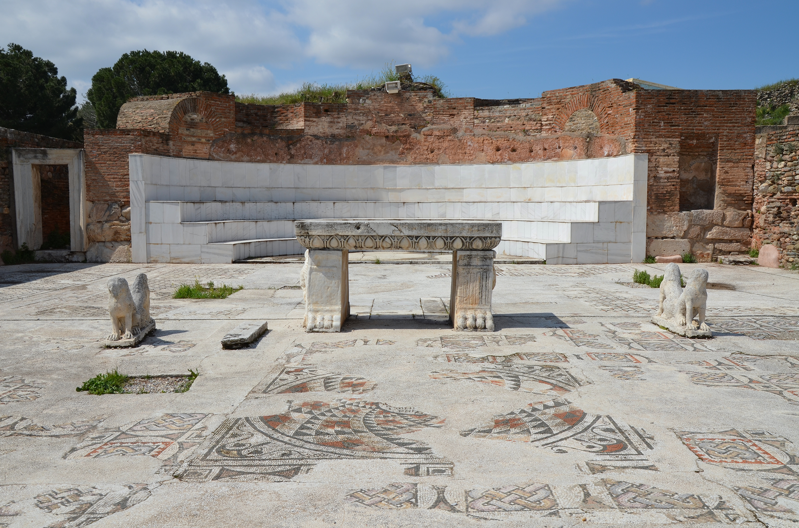

Sardis Synagogue

- Find Name
- Sardis Synagogue
- Description
- The monumental synagogue of Sardis, discovered in 1962 by the Harvard-Cornell expedition inside the city's Roman bath-gymnasium complex. A civic basilica-style hall converted for Jewish worship, it is the largest ancient synagogue known, its main hall over 50 metres long with room for about a thousand worshippers, mosaic floors, and more than eighty Greek and seven Hebrew donor inscriptions. The synagogue postdates the New Testament, but it proves the size, wealth, and civic integration of the Jewish community in a city addressed in Revelation.
- Historical Period
- Roman
- Evidence Class
- Contextual
- Interpretations
- The building's identification as a synagogue and its scale are undisputed; debate concerns only its building phases (conversion dated between the late 2nd and mid-4th century) and the later decorative layers. It does not prove anything about the first-century church directly — it illuminates its civic and Jewish context.
- Alternative Names
- Synagogue of Sardis
- Related Places
- Related Books
- Related People
- Scripture Illuminated
- Biblical Significance
- Sardis is one of the seven churches of Revelation 3:1-6, warned that it had a reputation of being alive but was dead. The synagogue shows that the Jewish community alongside that struggling church was large, prosperous, and deeply embedded in civic life — the world in which the Sardian Christians had to 'wake up' and hold fast.
- Artifact Date
- Late 2nd-3rd century AD, with 4th-5th century decoration
- Current Location
- In situ, Sardis archaeological site
- Date Discovered
- 1962
- Discovery Location
- Sardis (Sart), Manisa Province, Turkey
- Timeline Era
- Early Church
Awaiting Review Not yet checked against scholarly sources. Treat its claims as provisional until this entry is reviewed. About verification
Last reviewed: not yet reviewed